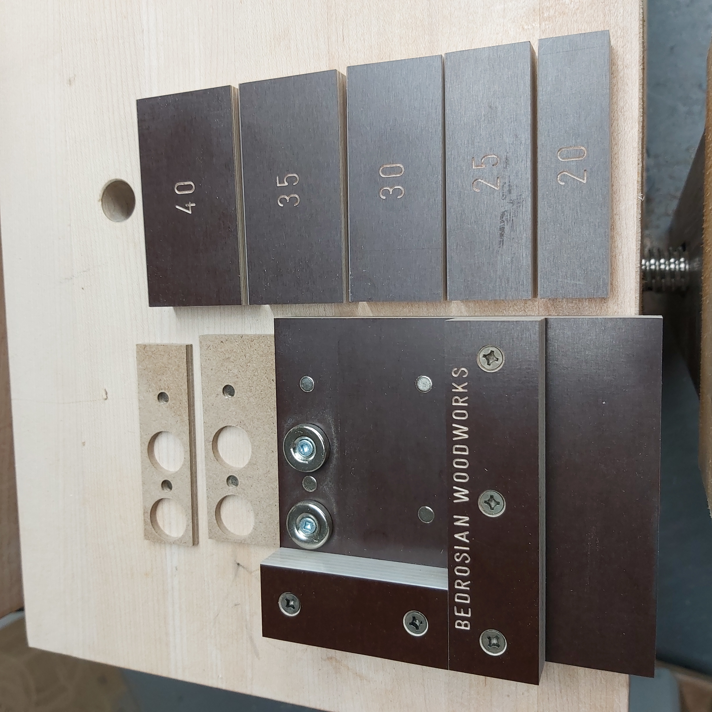
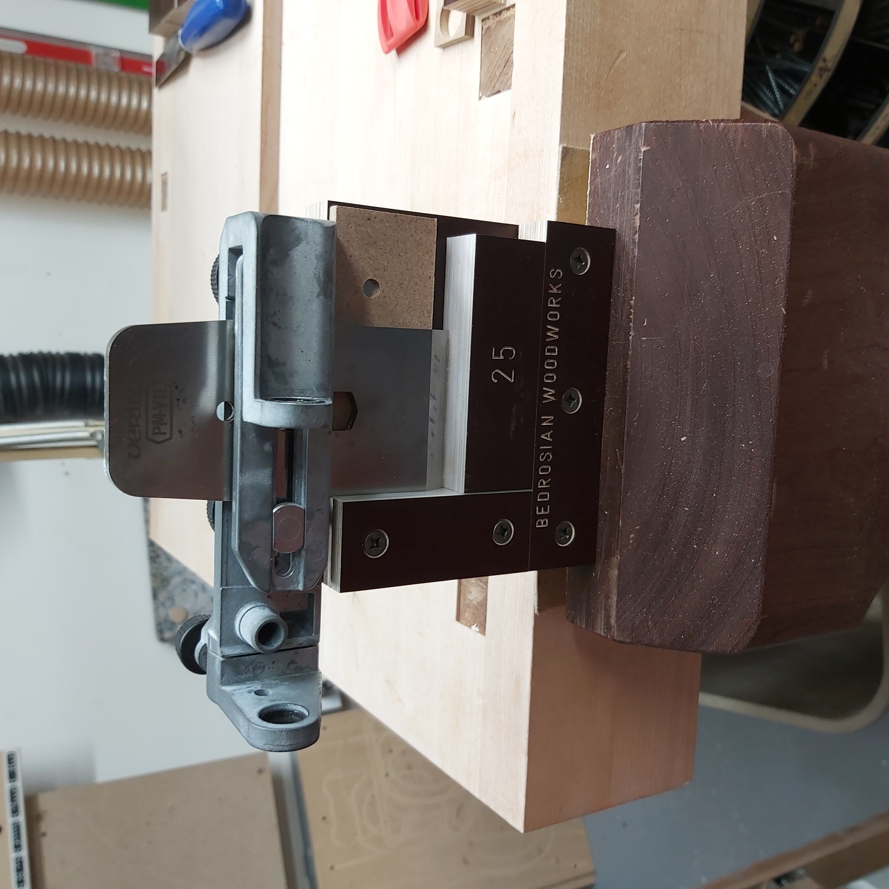
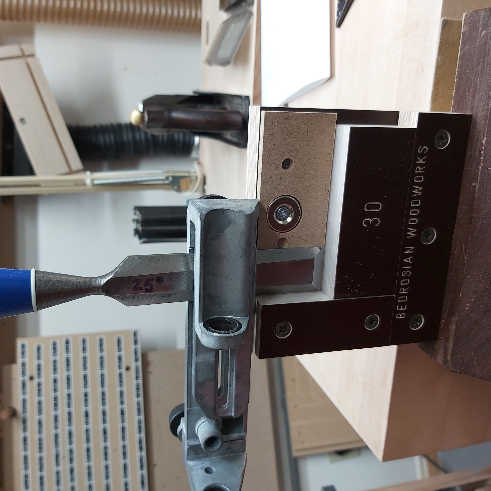
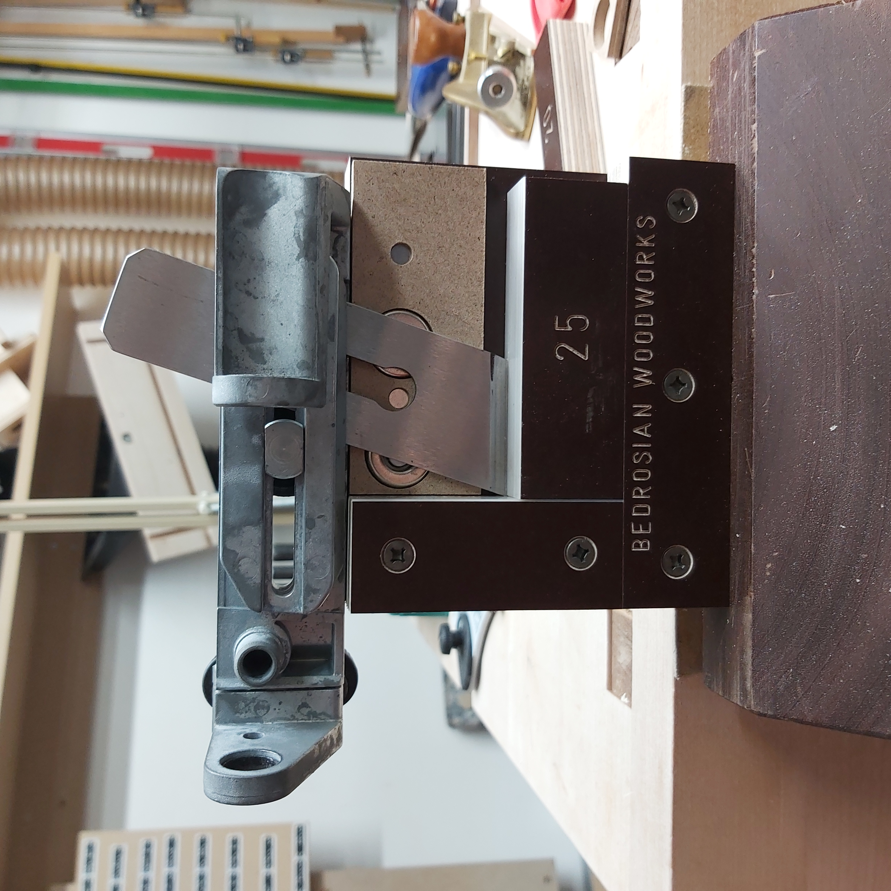

|
|
|
Projection Jig for the SE-76 or SE-77 |

3D-Printed Projection Jig
for the SE-76 or SE-77 with the TTS-100
I made these pieces using my 3D printer to make it easy for quick-and-dirty resharpening of my chisels when using the Tormek SE-76 or SE-77 jigs. The concept is that the distance from the USB to the grindstone is set using the B hole in the Tormek TTS-100, and the tool projection is set using this jig.
Settings for projection when using the SVD-186 are also available so that this can be used for both jigs.
Special thanks are due to Jan H (jvh on the Tormek Forum, and developer of TormekCalc2) for calculating the projections necessary for the SE-77 using parametric CAD.
|

Full set |

Aligning a plane blade |
|

Aligning a chisel |

Aligning a skew chisel |
David Bedrosian of Bedrosian Woodworks designed a variation of this which uses magnets to hold parts in place. It is a really innovative approach.
He sells the jig or plans for the jig, and you can get them by contacting him at his eMail: bedrosianwoodworks at gmail dot com (not a link; just blue to highlight it) or DM him on Instagram @BedrosianWoodworks.
There is link to his YouTube video below which shows how he uses this jig.
You can click on any of the pictures from David and see a bigger version.
The steps for using this jig to sharpen a tool are:
The video referenced below, Jigs for the Tormek SE-77, shows the steps for this jig is used.
For the SVD-18x* jig, the right side of this jig has the same projection distances as the TTS-100. It is repeated here for convenience.
The steps for using this jig to sharpen a tool are outlined below. The jig setting and projection are based on your desired grind, and are outlined in the user manual for your SVD-18x jig.
You can purchase one of the 3D-printed versions from Colvin Tools.
You will need to contact David Bedrosian to purchase his (or the plans for making it).
This file is available for printing as a single piece or two.
The jig I originally made is two pieces as that is easier to 3-D print on my older, Creality Ender 3 printer.
|
Two-Piece Design |
|
|---|---|
|
Part |
STL File |
| Part 1 - Top Plate | TTS-100 ProjJig - Part 1.stl |
| Part 2 - Bottom Hook | TTS-100 ProjJig - Part 2.stl |
If you would prefer to print a single file, this one is available. It also includes the text as objects so multiple filament printers can print the text as a different color.
The Fusion 360 file (f3d) is also supplied in case you would like to modify this design for different uses.
|
One-Piece Design |
||
|---|---|---|
|
Part |
3MF File |
F3D File |
| Jig with Text | TTS-100-ProjectionJig-v2.3mf | TTS-100-ProjectionJig-v2.f3d |
This video also reviews how to use this jig.
{kind=link}
{kind=link}
{kind=link}
{kind=link}